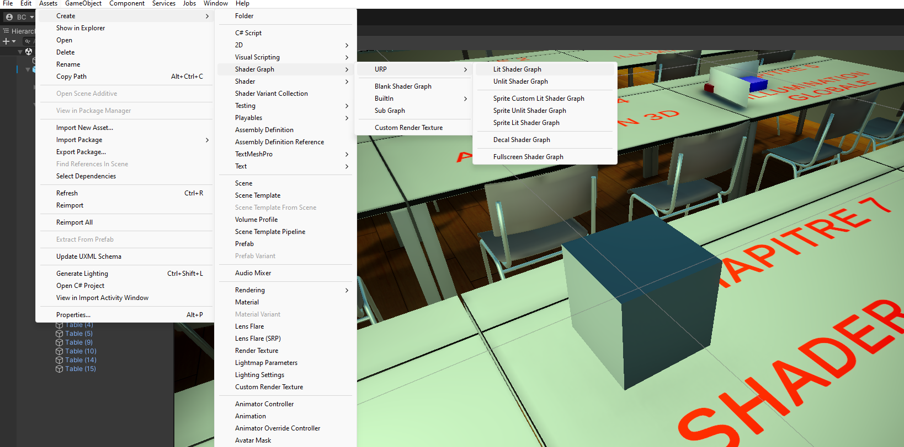

chapitre 7
Shader Graph
Introduction
Créer des Shaders en connectant les Ports de
Nodes entre eux
Nodes : calculs / Conversions
Ports : données
Connections : flux des données

Un Shader Graph est un Asset
Aperçu
1 - Le Blackboard affiche les Properties
2 - : le Graph Inspector
3 - : le Master Stack
4 - : Preview

Créer un Node

Connections

Properties
Animated Colored Voronoi Shader